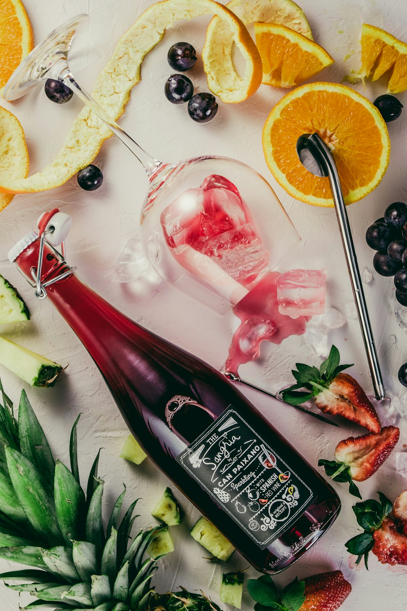
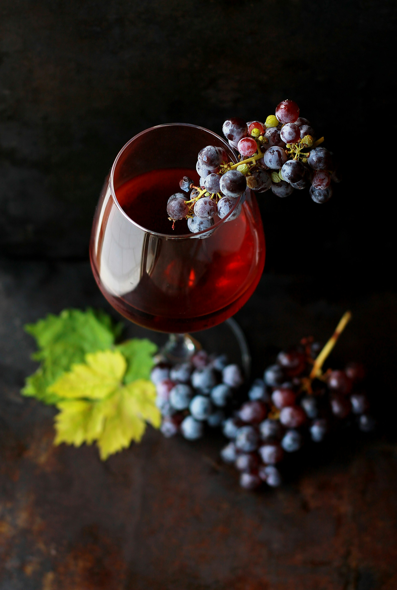
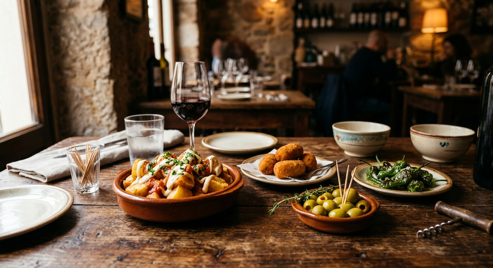
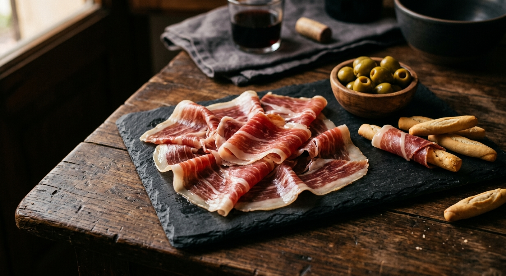
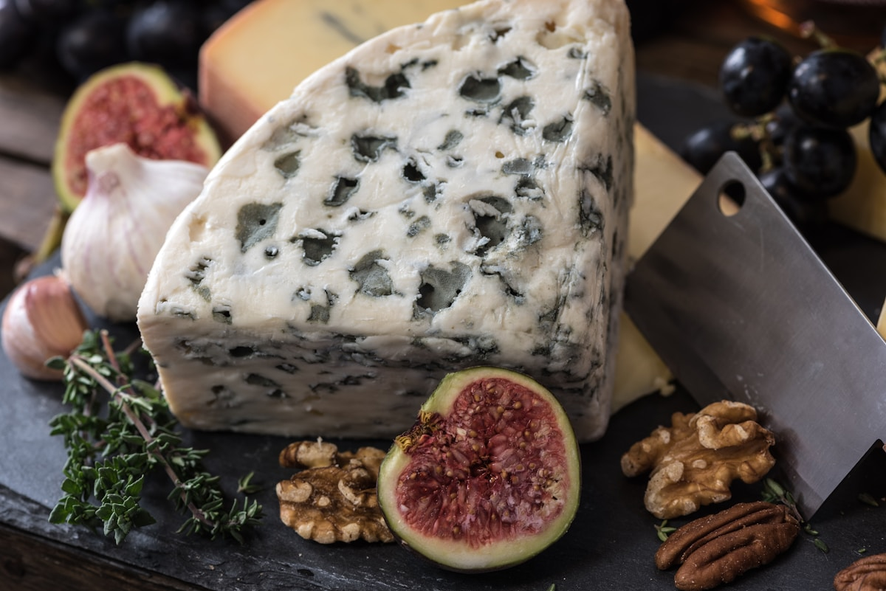
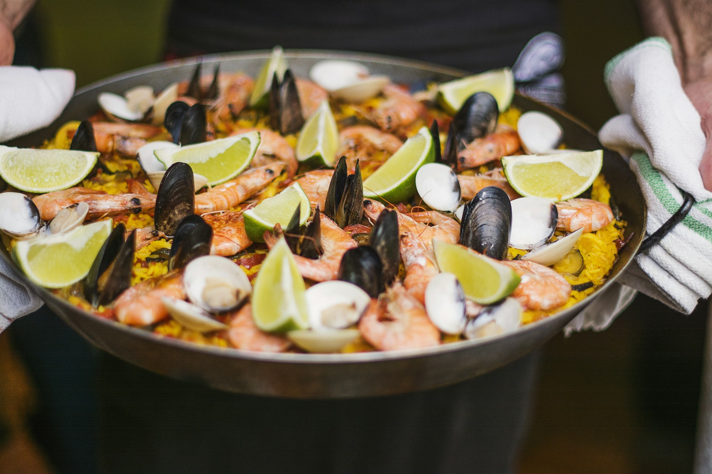

Calpe — Desde 2003
Cocina mediterránea, vinos de autor y una vinoteca que cuenta su propia historia. Veinte años después, la mesa sigue puesta.
Nuestra carta
Cada plato nace de ingredientes locales tratados con la técnica justa. Sin artificios, sin excesos. El Mediterráneo en su expresión más honesta.




La vinoteca
Una selección curada que recorre España, Francia e Italia. Desde referencias clásicas hasta descubrimientos de pequeños productores.
Tempranillo, Cabernet Sauvignon
Complejidad en estado puro. Notas de cuero, especias orientales y fruta negra madura. Final interminable.
320 € botella
Garnacha, Cariñena, Syrah
Mineral, profundo, con la pizarra del Priorat grabada en cada sorbo. Estructura imponente, elegancia inesperada.
85 € botella
Tempranillo, Garnacha, Mazuelo
Clasicismo riojanista. Oxidativo, complejo, con una frescura que desafía sus dos décadas. Un vino que exige tiempo.
120 € botella
Chardonnay
Precisión borgoñona en estado puro. Cítricos, pedernal, mantequilla sutil. Para entender por qué Borgoña es Borgoña.
145 € botella
Palomino Fino
La versión sin filtrar del fino más famoso del mundo. Levaduras, almendra amarga, brisa atlántica. Efímero y esencial.
18 € copa
Nebbiolo
Una catedral en copa. Rosas marchitas, alquitrán, cerezas secas. El Barolo que define la categoría.
480 € botella


“La selección de vinos es extraordinaria. Nos recomendaron un Priorat que no conocía y fue una revelación. La comida, a la altura.”
Hace 2 semanas
“Llevamos viniendo 10 años y nunca decepciona. El arroz de bogavante es probablemente el mejor de la Costa Blanca. Reservad con tiempo.”
Hace 1 mes
“Un restaurante que entiende que el vino no es un complemento, es parte central de la experiencia. La vinoteca es impresionante.”
Hace 3 semanas
Tu mesa espera
La mejor manera de descubrir La Viña es sentarse a la mesa. Reserva y deja que el Mediterráneo haga el resto.
+34 965 838 100 Llamar para reservar